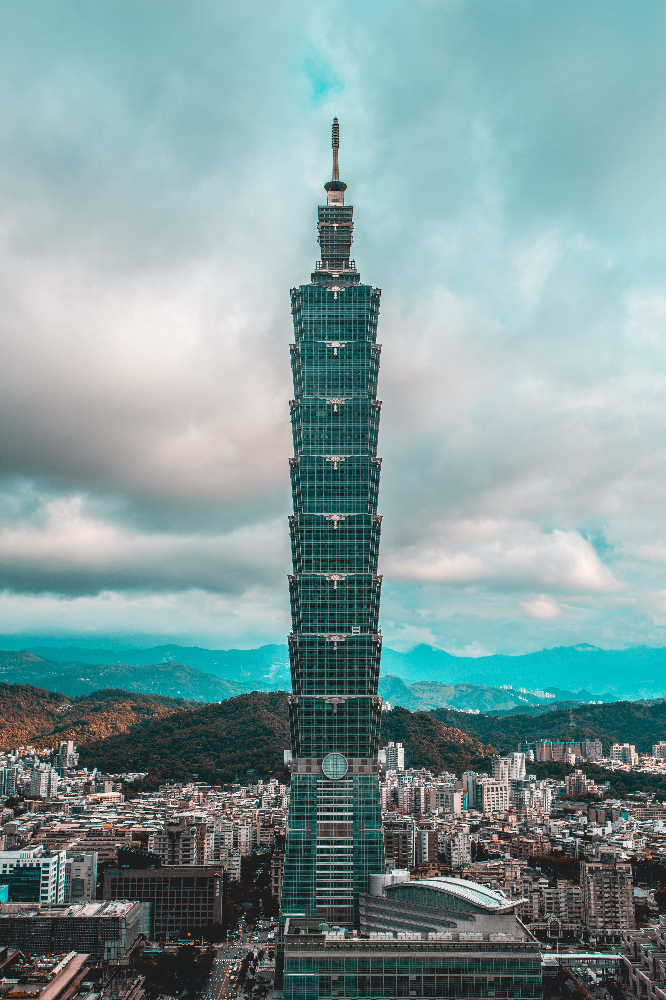
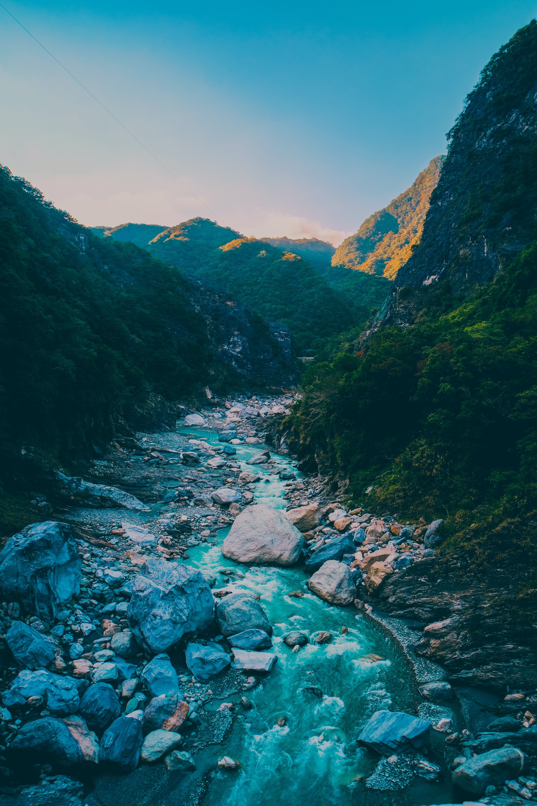

您好，我是詹湘菱，畢業於國立勤益科技大學景觀學系。 我的家庭教育注重務實和按步就班，這種特質深植在我的個性中。 除了閱讀，我還熱愛健身。這種運動除了幫助我保持健康， 還可以讓我與自己的身體對話並突破自我極限。 透過自我學習，我於2023年1月取得多益金色證書， 這個成就讓我更加自信地面對未來。

關於我

就學期間
我在大學期間積極參與課外活動，包括擔任系學會的文書長。 我還擔任過四系聯合歌唱比賽的活動長， 這個經驗讓我學會了如何統籌資源、協調團隊和學會了團隊領導與溝通能力。 在三場成果發表會的司儀經驗中， 我掌握了如何引導活動的進行、處理突發狀況和營造現場氣氛的應變能力。 在參與不同活動的過程中，我培養了更加敏銳的觀察力， 學會了團隊領導與溝通、分配資源的能力。

工作經驗
我於遠雄自由貿易港區擔任貨物運務員，航空產業經驗五年。 在這段時間中，我從裝載計畫、進出口貨物運務、 危險物品監察到機邊裝載作業協調等方面獲得了豐富的經驗。 我學會了如何從作業的角度分析裝載的正確性，以進行適當的調整以提高整體效率。 為了提高自己的專業知識，我主動參加了各種課程， 例如航空保安、資訊安全、危險品證照等。

遊學經驗
在菲律賓留學學英文的一個月期間，我獲得了非常難忘的和寶貴的經驗。 與來自世界各地的學生一起學習，這為我提供了一個寶貴的跨文化交流的機會。 這不僅擴展了我的視野，還豐富了我的語言學習體驗。 在課餘時間，我參觀了一些著名的景點， 如薄荷島和巴拉望島，並體驗了當地的飲食和娛樂活動。 總的來說，去菲律賓留學學英文的一個月對我來說是一個非常寶貴的經歷。 我在這段時間內提升了我的英語能力，結交了許多國際朋友，並體驗了不同的文化。 我相信這個經歷將對我的未來有所助益，並且成為我人生中一個難以忘懷的回憶。

情緒處理
最近在求職過程中遇到了一些困難，這使我產生了自我懷疑和沮喪的負面情緒。 當我陷入這樣的情緒中時，我會先找個安靜的地方，靜下心來。 然後把內心的想法透過寫字的方式寫出來，這個過程可以更清晰地了解自己的疑問和想法。 接著，我會尋求支持或與他人交流。我會找信任的朋友或家人分享我的感受，聆聽他們的建議和意見。 有時候，他們的觀點和鼓勵能夠給我新的角度和力量。 最後，我會努力釐清思緒並尋求幫助，以找到解決問題的方法。 這可能包括繼續學習和提升自己的技能，尋找新的求職機會或尋求專業輔導。 這樣的處理方式有助於我轉移負面情緒並專注於解決問題，讓我能夠保持積極和堅持不懈的態度。

未來生涯規劃
在這樣的目標下，我相信自己的溝通和分析能力可以協助公司更好地達成目標。 為了讓自己更加符合公司需求，我正在進行進一步的學習和訓練， 包括了解市場趨勢、參與相關行業活動、透過進修提高自己的專業能力， 以及積極尋找跨部門合作的機會，以期在公司中扮演更重要的角色。